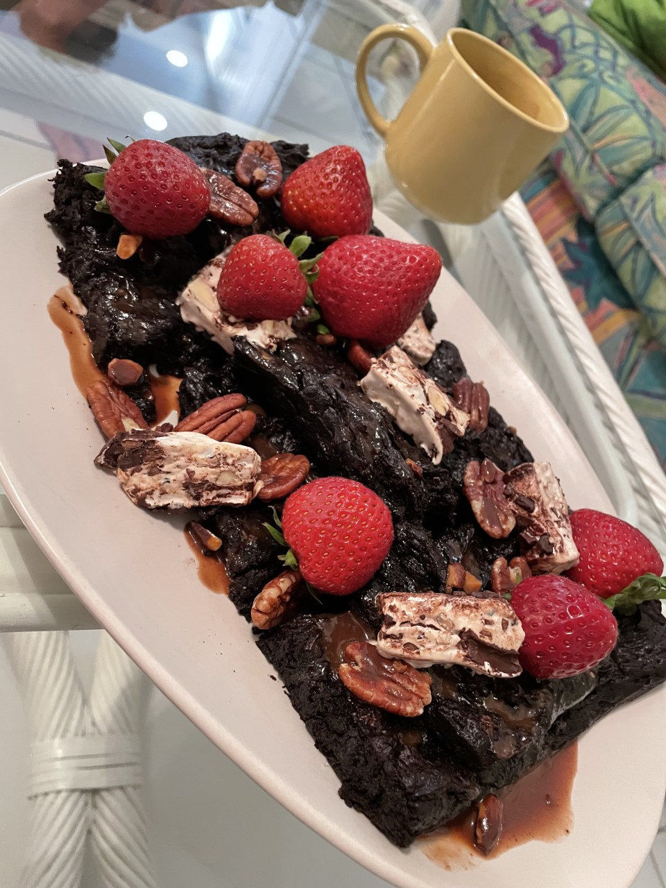

Flourless Chocolate Cake
Ingredients:
- 200g dark chocolate, chopped
- 120g butter, chopped
- 5 large free-range eggs
- 2 tbsp cacao powder
- 250g caster sugar
- 100g almond flour
- 1 tsp cream of tartar
Method:
- Preheat the oven to 175°C. Grease and line a 23cm cake tin. Melt the chocolate and butter until smooth.
- Separate 3 eggs, then combine 3 egg yolks with the remaining 2 whole eggs, the cacao and sugar, whisking until the sugar has dissolved.
- Fold in the almond flour and stir in the melted chocolate. In another larger bowl, whisk the egg whites and cream of tartar until soft peaks form. Fold into the chocolate bater a little at a time to retain the air.
- Pour into the greased cake tin, level out the batter and bake for 25 minutes. Turn off the oven, leaving the door slightly open to allow the cake to cool completely.
